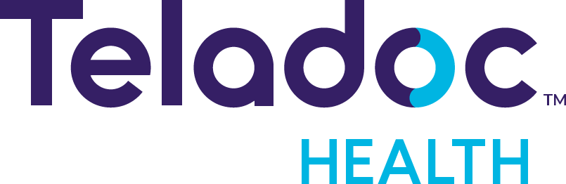
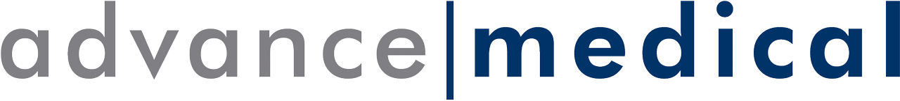

如果您已经接受了医学专家意见服务，现在需要进一步安排接下来的治疗事宜,汇医可以提供以下帮助，通过医疗资源安排服务，汇医将根据您的状况专门为您匹配权威治疗专家和医疗机构。
我们的专案医生和支持团队将负责全链条病案管理,为您匹配国内外专家,并安排预约。专案医生还将与您的新主治医生进行前期医疗沟通，充分准备，确保治疗尽快开始。这包括安排进入北京和上海的国际诊所和VIP病房，以及全球各地的世界级医疗机构。


家庭医生随身行